READ · RNA-seq: contagens brutas (GDC)
STAR - Counts (GENCODE v36) · gerado em 22/10/2026 03:30
39,6 Mtamanho mediano
0,37dispersão mediana α
16.598genes
166amostras tumorais
10amostras normais
0,0%valores faltantes
Fonte: API do GDC (STAR - Counts)
Principais resultados
- Bibliotecas de 14,1 a 90,8 milhões de leituras (mediana 39,6). 40.441 de 60.660 features têm leitura em pelo menos 10% das amostras.
- A variância cresce bem acima da média: a dispersão mediana da binomial negativa é α=0.37 (para features com média > 10). Isso descarta um modelo Poisson e indica binomial negativa (ou Poisson-lognormal) na verossimilhança.
- A fração de zeros é compatível com a binomial negativa (diferença mediana -0,0%); inflação de zeros não parece necessária.
- Em média 10,0% das leituras de cada amostra vão para as 20 features mais abundantes (MT-ND4, MT-CO1, MT-CO2).
- Genes codificadores de proteína recebem 97,2% das leituras (mediana).
- 16.598 genes medidos em 176 amostras (166 tumorais e 10 normais); 0,0% dos valores estão faltando.
- Os dois primeiros componentes principais explicam 17,3% e 9,9% da variância das features mais variáveis.
- Correlação mediana entre amostras: 0,64.
- Tumor x normal: 10456 genes diferentes com FDR < 5% (6061 maiores no tumor, 4395 maiores no normal; 9 pacientes têm o par tumor-normal).
- Mais aumentados no tumor: ENSG00000101115.13, ENSG00000159263.16, ENSG00000105219.10, ENSG00000212993.5, ENSG00000170231.16, ENSG00000115507.10, ENSG00000281406.2, ENSG00000239605.11.
- Mais reduzidos no tumor: ENSG00000133742.14, ENSG00000047457.14, ENSG00000156284.6, ENSG00000175497.17, ENSG00000079739.17, ENSG00000139117.14, ENSG00000054392.13, ENSG00000171714.12.
- Associações clínicas com p < 0,05 nos componentes principais: PC2 com idade (p=0.0088).
Biblioteca
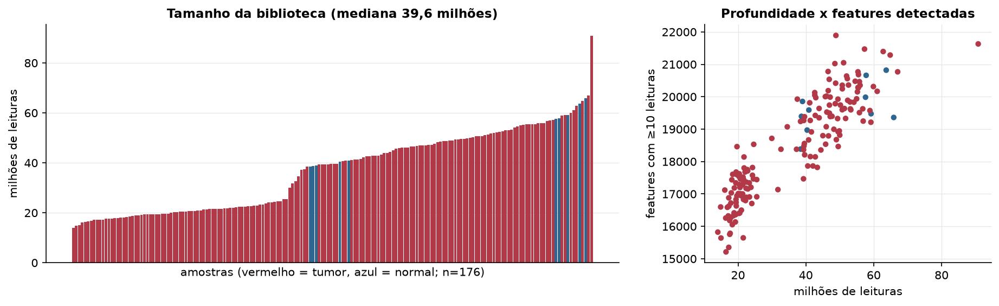
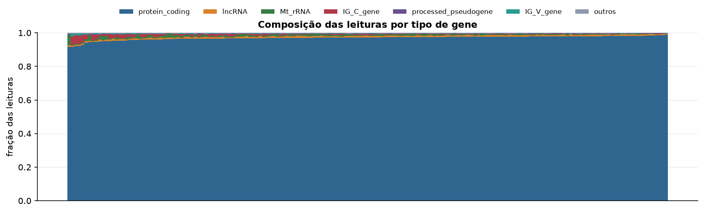
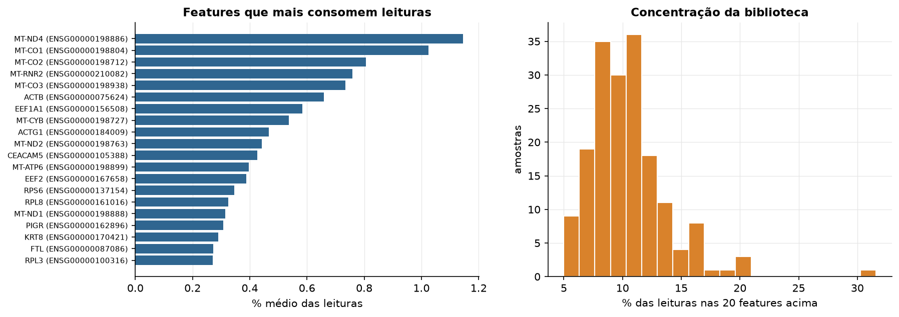
Sobredispersão e zeros
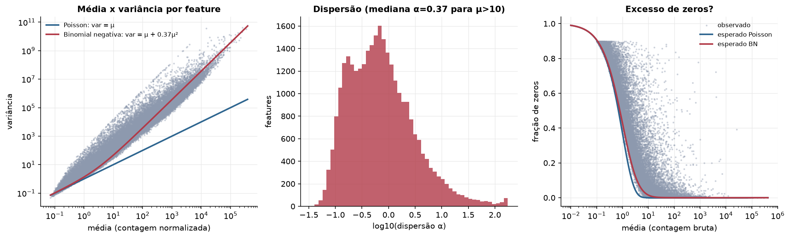
Exploração em log2(CPM+1)
Features com CPM ≥ 1 em pelo menos 20% das amostras (16.598 features).
Distribuição dos valores
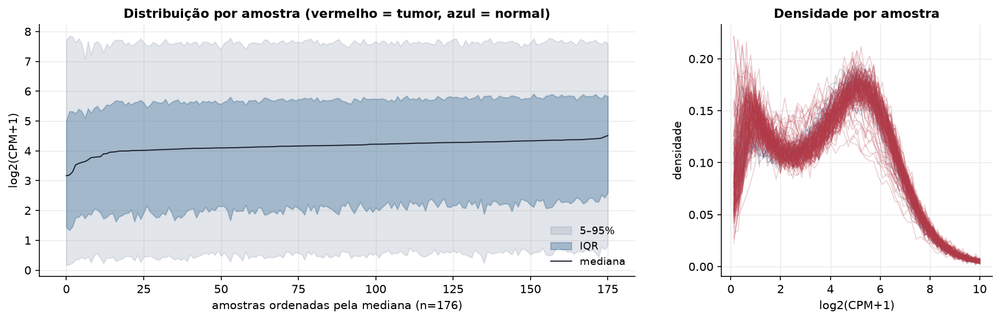
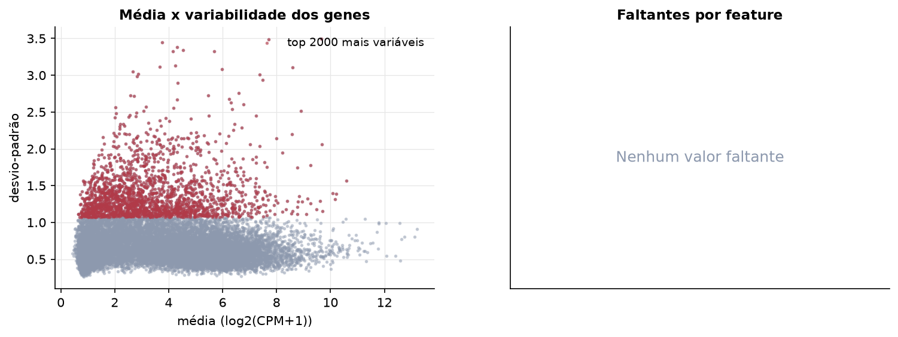
Estrutura das amostras
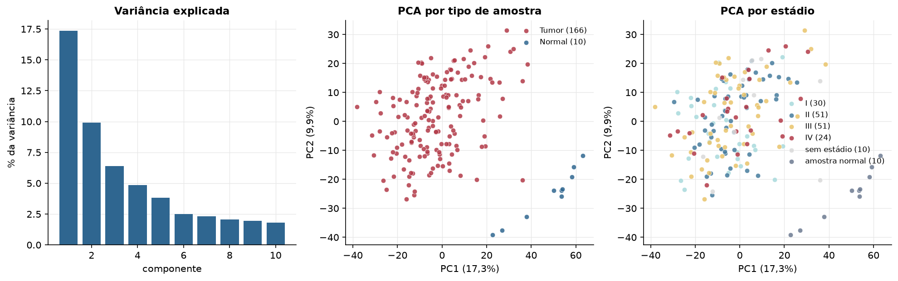
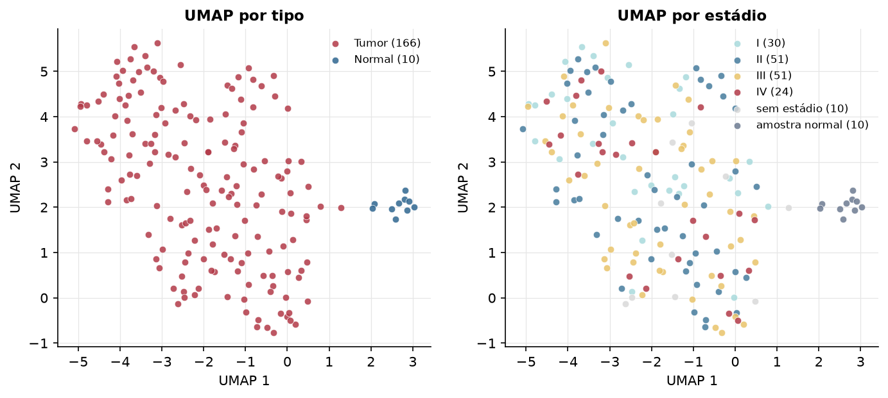
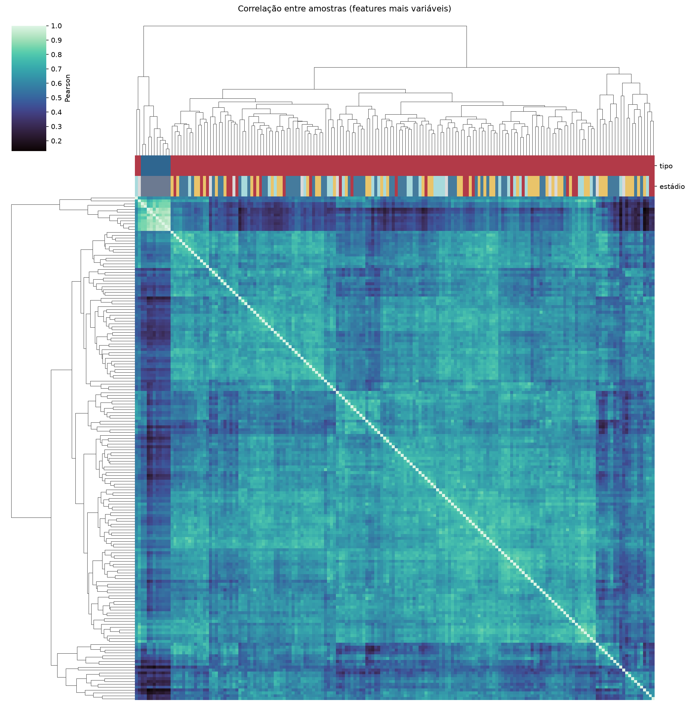
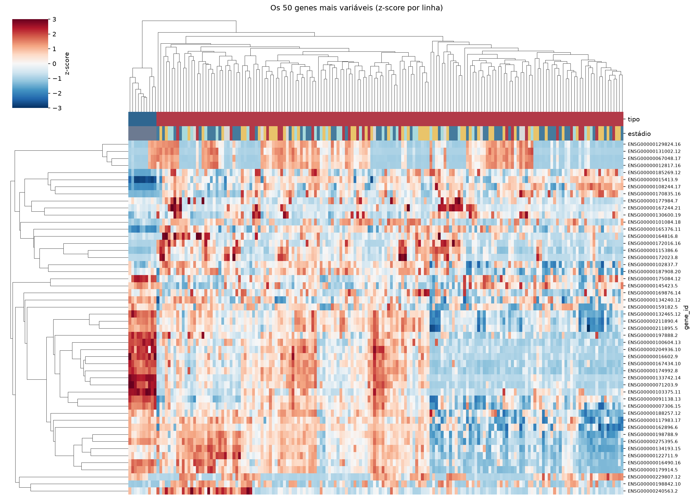
Tumor x normal
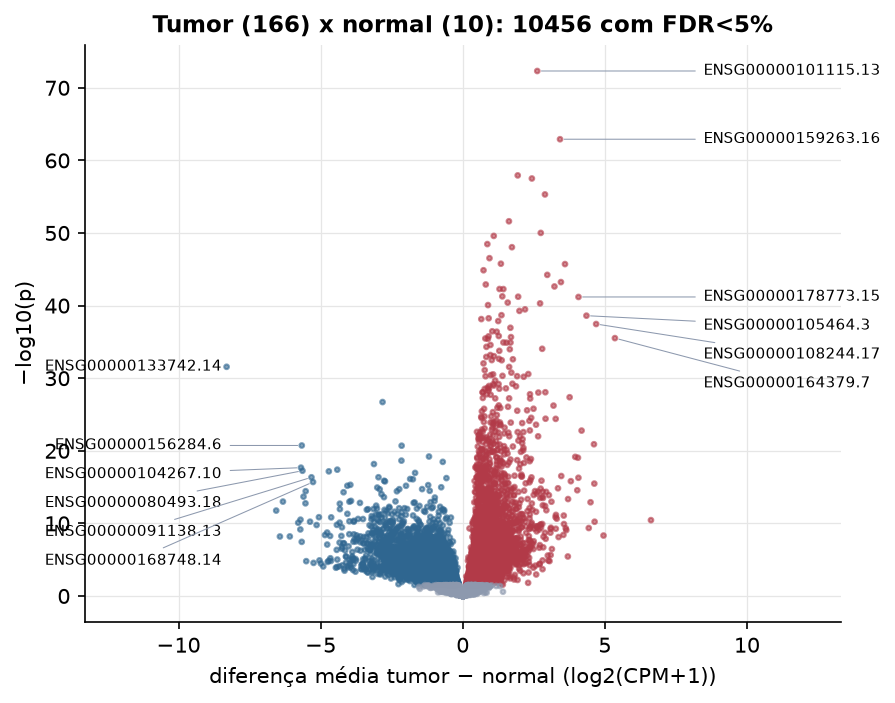
Features mais diferentes entre tumor e normal
| gene_id | diferenca_tumor_menos_normal | t | p | fdr |
|---|---|---|---|---|
| ENSG00000101115.13 | 2.622 | 31.632 | 4.83e-73 | 8.01e-69 |
| ENSG00000159263.16 | 3.424 | 32.479 | 1.21e-63 | 1e-59 |
| ENSG00000105219.10 | 1.935 | 24.657 | 1.16e-58 | 6.41e-55 |
| ENSG00000212993.5 | 2.433 | 25.539 | 3.08e-58 | 1.28e-54 |
| ENSG00000170231.16 | 2.893 | 26.845 | 4.85e-56 | 1.61e-52 |
| ENSG00000115507.10 | 1.626 | 22.095 | 2.42e-52 | 6.69e-49 |
| ENSG00000281406.2 | 2.746 | 27.186 | 9.67e-51 | 2.29e-47 |
| ENSG00000239605.11 | 1.092 | 21.33 | 2.51e-50 | 5.21e-47 |
| ENSG00000229970.3 | 0.866 | 21.019 | 3.36e-49 | 6.19e-46 |
| ENSG00000107807.13 | 1.731 | 21.315 | 9.01e-49 | 1.5e-45 |
| ENSG00000262772.2 | 0.941 | 20.118 | 2.93e-47 | 4.41e-44 |
| ENSG00000226320.6 | 1.343 | 19.832 | 1.7e-46 | 2.35e-43 |
| ENSG00000170373.8 | 3.598 | 21.766 | 1.91e-46 | 2.44e-43 |
| ENSG00000285897.1 | 0.731 | 19.502 | 1.35e-45 | 1.6e-42 |
| ENSG00000137868.19 | 2.975 | 21.675 | 5.85e-45 | 6.47e-42 |
| ENSG00000170835.16 | 3.455 | 18.896 | 5.77e-44 | 5.98e-41 |
| ENSG00000251026.2 | 0.811 | 19.009 | 1.24e-43 | 1.21e-40 |
| ENSG00000123500.10 | 3.227 | 18.749 | 2.3e-43 | 2.12e-40 |
| ENSG00000228742.11 | 1.295 | 18.617 | 5.16e-43 | 4.39e-40 |
| ENSG00000204869.8 | 1.43 | 18.657 | 5.29e-43 | 4.39e-40 |
| ENSG00000229404.6 | 1.393 | 18.334 | 5.32e-42 | 4.21e-39 |
| ENSG00000226476.6 | 1.95 | 18.429 | 5.97e-42 | 4.51e-39 |
| ENSG00000178773.15 | 4.073 | 28.89 | 6.45e-42 | 4.66e-39 |
| ENSG00000143882.12 | 1.582 | 17.978 | 3.86e-41 | 2.67e-38 |
| ENSG00000167755.15 | 2.722 | 18.056 | 4.94e-41 | 3.28e-38 |
| ENSG00000232850.3 | 0.89 | 18.42 | 8.49e-41 | 5.42e-38 |
| ENSG00000158055.16 | 2.192 | 20.968 | 3.29e-40 | 2.02e-37 |
| ENSG00000230061.2 | 1.995 | 19.91 | 5.35e-40 | 3.17e-37 |
| ENSG00000228705.2 | 1.363 | 17.373 | 2.08e-39 | 1.19e-36 |
| ENSG00000105464.3 | 4.353 | 36.163 | 2.44e-39 | 1.35e-36 |
Associação com variáveis clínicas
p-valores da associação dos três primeiros componentes principais (só tumores) com estádio (Kruskal-Wallis), sexo (Mann-Whitney), idade (Spearman) e sobrevida global (Cox univariado).
| estádio (Kruskal) | sexo (Mann-Whitney) | idade (Spearman) | sobrevida OS (Cox) | |
|---|---|---|---|---|
| PC1 (15,1%) | 0.123 | 0.631 | 0.148 | 0.486 |
| PC2 (8,5%) | 0.494 | 0.912 | 0.009 | 0.228 |
| PC3 (6,1%) | 0.777 | 0.369 | 0.171 | 0.53 |